指示・スクリプト・リソースをパッケージ化し、エージェントに専門的な能力を与える仕組みを、ハンズオンを通じて理解
| # | パート | 内容 | 時間 |
|---|---|---|---|
| 0 | はじめに | 本日のゴール | 5分 |
| 1 | Agent Skills とは | 定義・フォルダ構成・段階的な読み込み | 15分 |
| 2 | Copilot Studio での位置づけ | 指示／ナレッジ／ツールとの違い、呼び出しの仕組み | 10分 |
| 3 | 追加方法と管理 | AI で生成（デモ）、Step 0〜3：エージェント作成・最初から作成・.md アップロード・.zip 置換 | 45分 |
| 4 | 書き方と注意点 | フロントマター、description、トラブル対応 | 15分 |
| 休憩 | 10分 | ||
| 5 | 演習 | Step 4〜5：作成したスキルの動作確認と振り返り | 20分 |
| 6 | 公開スキルの活用 | 公開リポジトリと取り込み前の確認事項 | 10分 |
| 7 | 自分たちでスキルを作成 | Step 6：業務の選定・設計・作成・テスト・共有 | 35分 |
| 8 | まとめ・Q&A | 15分 |
Skills の概要と、指示・ナレッジ・ツールとの違いの把握
「最初から作成」「.md」「.zip」でのスキル追加と、置換による更新
自社の業務を 1 つ選び、スキルとして設計・作成
指示・スクリプト・リソースを 1 つにまとめた、移植可能なパッケージ。エージェントは 必要なときにのみ 読み込み、特定のタスクを定められた手順で実行。
SKILL.md（名前・説明・手順）必要に応じて参照資料やテンプレートを同じフォルダに配置agentskills.io のクライアント一覧より抜粋。Copilot Studio は Microsoft Learn に「オープン仕様に準拠」と記載。
expense-policy-check/ ├── SKILL.md ← 必須：名前・説明・手順 ├── references/ ← 任意：規程・仕様などの参照資料 │ └── expense-policy.md ├── assets/ ← 任意：テンプレート・画像・PDF など │ ├── result-template.md │ └── expense-policy-original.pdf └── scripts/ ← 任意：実行コード（対応は製品次第）
---
name: expense-policy-check
description: "経費精算の申請内容が社内の
経費精算規程に沿っているかを判定し、
OK/要確認/NGと根拠を表で返す。
「この経費は精算できる？」などを
尋ねられたときは…使う。"
---
# 経費精算規程チェック
## 手順
1. 明細を抜き出す
2. references/expense-policy.md で
該当する条文を特定する
3. OK / 要確認 / NG を判定する
4. assets/result-template.md の形式で出力
5. NG・要確認なら assets/ の原本 PDF を添付
4項目は Microsoft Learn「スキルを使用する理由」より。
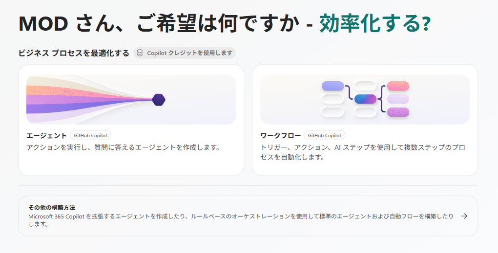
プレビューのため、画面や仕様は今後変更の可能性あり。
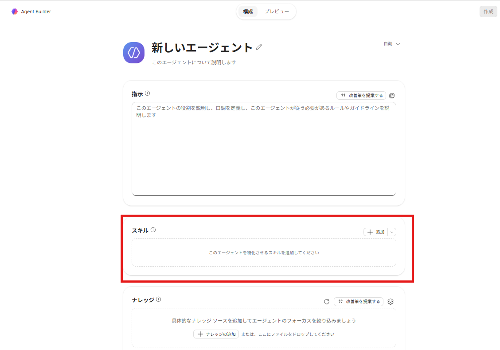
| 要素 | 役割 | 設定する場所 | イメージ |
|---|---|---|---|
| 指示 | エージェント全体の振る舞い・人格 | エージェントの指示（ID 設定） | 社員としての心得 |
| ナレッジ | エージェントが参照するデータ | ナレッジ ソース | 社内の資料棚 |
| ツール | 外部サービスを使った操作 | コネクタ／API／MCP | 電話・業務システム |
| スキル | 特定のタスクを再利用可能な形で実行する能力 | Markdown のスキル ファイル／パッケージ | 業務マニュアル（手順書） |
オーケストレーターがユーザーのメッセージと各スキルの description を照合し、使用するスキルを選択。
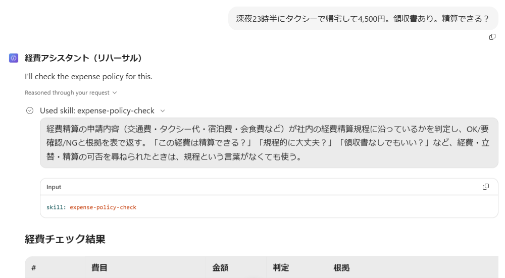
skill: expense-policy-check）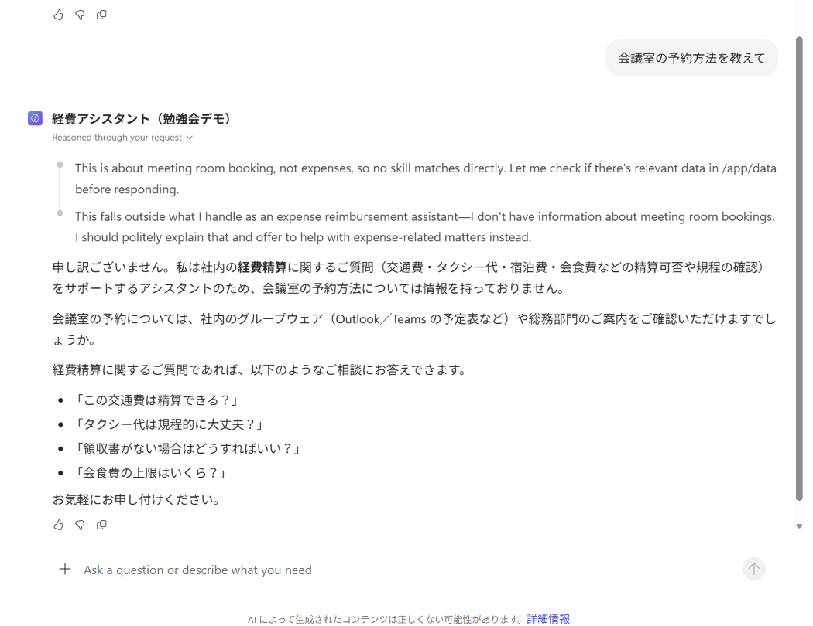
各追加方法の説明に続けて、その方法でスキルを作成。作成したスキルは、後半の演習でそのまま使用。
| Step | パート | 内容 | 時間 |
|---|---|---|---|
| Step 0 | 3 追加方法と管理 | 演習用エージェントの作成 | 5分 |
| Step 1 | 3 追加方法と管理 | business-trip-report を「最初から作成」で作成 | 10分 |
| Step 2 | 3 追加方法と管理 | expense-policy-check.md をアップロード | 10分 |
| Step 3 | 3 追加方法と管理 | zip（規程・テンプレート・原本 PDF を同梱）に置換 | 10分 |
| Step 4 | 5 演習 | 作成したスキルの動作確認 | 15分 |
| Step 5 | 5 演習 | 振り返り | 5分 |
| Step 6 | 7 自分たちでスキルを作成 | 自分たちの業務でスキルを設計・作成 | 35分 |
詳しい手順とコピー用の文面は handson/README.md に記載。資料一式：github.com/SeiyaTogawa/copilot-studio-agent-skills-workshop
handson/ ├── README.md … 手順書（コピペ用の文面つき） └── dist/ ├── expense-policy-check.md … Step 2 └── expense-policy-check.zip … Step 3 ├── SKILL.md ├── references/expense-policy.md ├── assets/result-template.md └── assets/expense-policy-original.pdf
| 条文 | 内容（抜粋） |
|---|---|
| 第2条 申請期限 | 発生から30日以内。超過時は遅延理由＋上長承認 |
| 第3条 領収書の添付 | 1件3,000円以上は領収書を添付 |
| 第5条 タクシー | 乗車が22時〜翌5時などの場合に限定。1回10,000円まで |
| 第6条 宿泊費 | 東京23区・大阪市・名古屋市は1泊12,000円、それ以外は10,000円 |
| 第7条 会食費 | 1人あたり8,000円まで。参加者全員の氏名・所属と目的を記載 |
| 第8条 承認 | 1回の申請が合計50,000円以上なら部長承認 |
経費アシスタント（自分の名前） を入力し、指示を貼り付けあなたは社内の経費精算をサポートするアシスタントです。日本語で丁寧に回答してください。
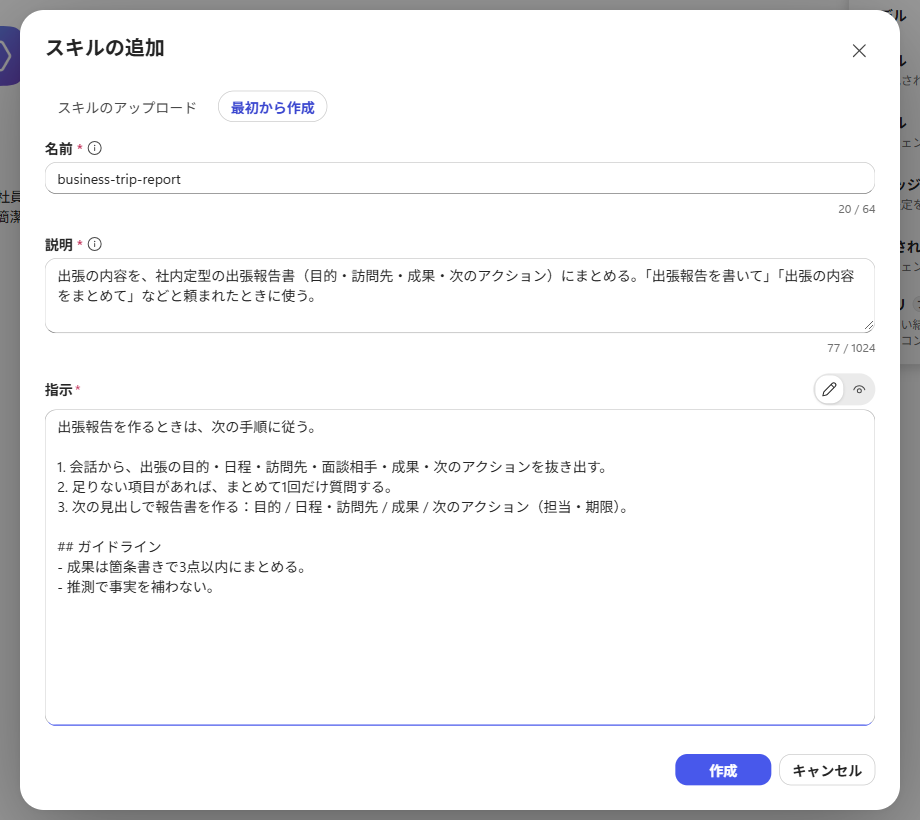
business-trip-reportbusiness-trip-report
出張の報告書を作成する。「出張報告を書きたい」「出張のまとめを作って」など、出張後の報告・共有を頼まれたときに使う。
昨日の大阪出張の報告書を作って。訪問先はA社、目的は新サービスの提案。先方は前向きで、来月に再訪問する予定。
# 出張報告書の作成 ## 手順 1. 出張先、日程、訪問先、目的、結果、次のアクションを聞き取る。足りない項目は1回だけまとめて質問する。 2. 次の見出しで報告書を作る：概要 / 訪問先と目的 / 結果 / 次のアクション / 経費メモ 3. 最後に「経費精算が必要な項目」を箇条書きにする。 ## 注意 - 推測で事実を書かない。不明な点は「（未確認）」と書く。
回答の上に Used skill: business-trip-report の表示があれば、スキルの呼び出しに成功。
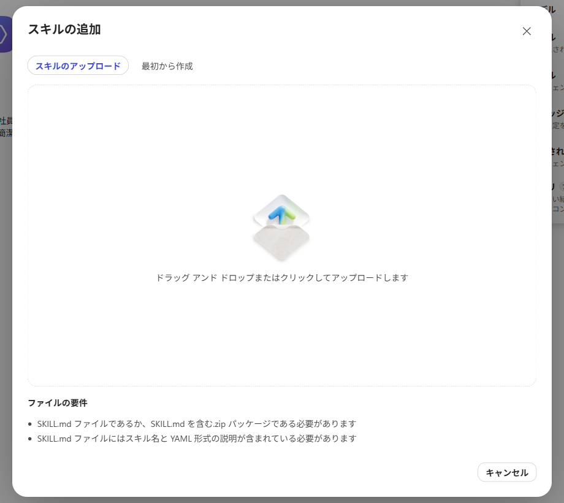
expense-policy-check/ ├── SKILL.md ← 必須：名前・説明・手順 ├── references/ ← 任意：規程・仕様などの参照資料 │ └── expense-policy.md ├── assets/ ← 任意：テンプレート・画像・PDF など │ ├── result-template.md │ └── expense-policy-original.pdf └── scripts/ ← 任意：実行コード（対応は製品次第）
---
name: expense-policy-check
description: "経費精算の申請内容が社内の
経費精算規程に沿っているかを判定し、
OK/要確認/NGと根拠を表で返す。
「この経費は精算できる？」などを
尋ねられたときは…使う。"
---
# 経費精算規程チェック
## 手順
1. 明細を抜き出す
2. references/expense-policy.md で
該当する条文を特定する
3. OK / 要確認 / NG を判定する
4. assets/result-template.md の形式で出力
5. NG・要確認なら assets/ の原本 PDF を添付
SKILL.md 単体でも、スキルの手順が回答に反映されることを確認。
dist/expense-policy-check.md を選択expense-policy-check が追加されたことを確認アップロード時に自動で保存取引先と4人で会食して合計40,000円でした。領収書はあります。参加者の名前は書いていません。経費として申請して大丈夫かチェックして
Used skill: expense-policy-check の表示規程ファイルがない場合の指示にも従い、一般的な観点で判定。
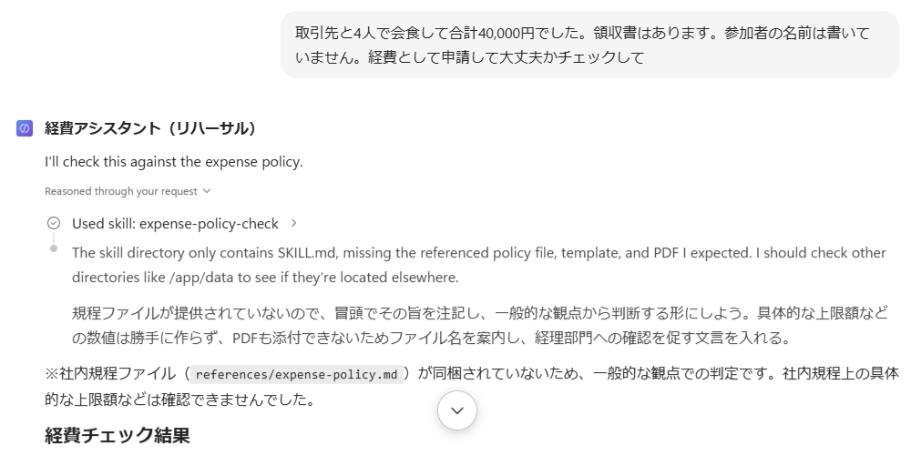
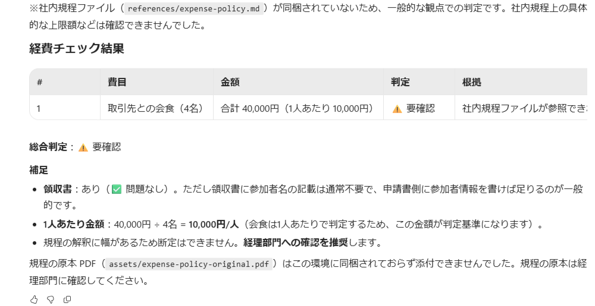
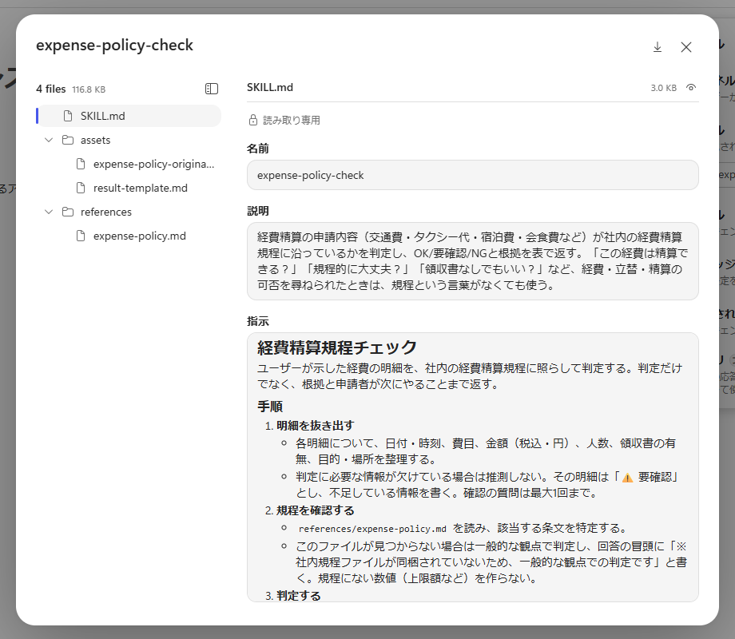
同じスキルに規程・テンプレート・原本 PDF を同梱し、回答の変化を確認。
expense-policy-check を選択し、詳細パネルの … → 置換dist/expense-policy-check.zip を選択アップロード時に自動で保存assets/result-template.md の形式で出力判定表・総合判定・申請者へのコメント案・参照した条文references/ の規程と assets/ のテンプレートを参照し、条文番号付きで判定。NG のため assets/ の原本 PDF も添付。
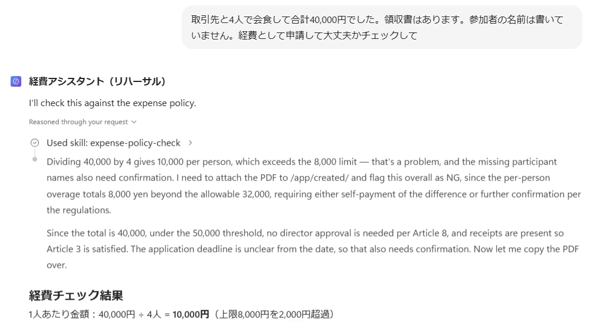
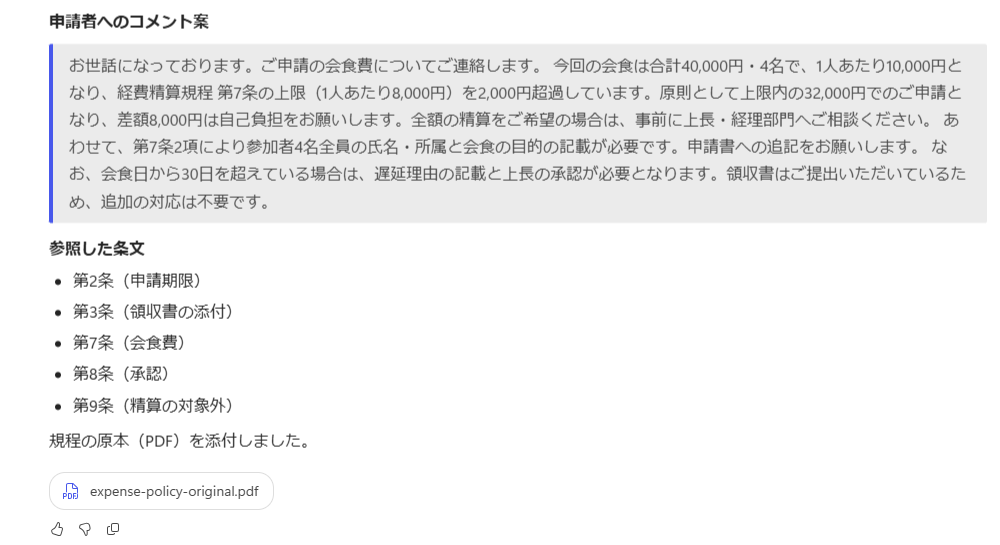
| 操作 | 最初から作成 | アップロード |
|---|---|---|
| 編集 | パネル上で編集可能 | 不可（読み取り専用） |
| 置換 | — | … → 置換で .md / .zip を差し替えzip で追加したスキルには表示されないため、削除して再アップロード |
| ダウンロード | ダウンロード アイコン | … → ダウンロードzip の場合は詳細パネルのダウンロード アイコン |
| 削除 | × アイコン。復元不可 | |
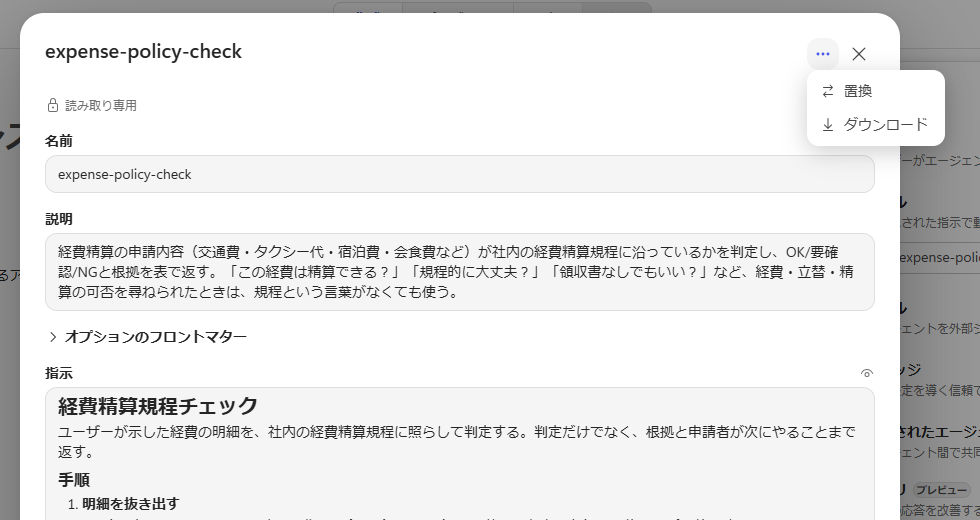
| 項目 | 必須 | ルール |
|---|---|---|
| name | 必須 | 1〜64文字。英小文字・数字・ハイフン先頭・末尾・連続のハイフン不可。フォルダ名との一致が必要 |
| description | 必須 | 1,024文字以内何をするか ＋ どんなときに使うか |
| license compatibility metadata | 任意 | ライセンス、動作環境、任意のキーと値 |
| allowed-tools | 任意 | 使用を許可するツールの指定（実験的） |
--- name: expense-policy-check description: "…OK/要確認/NGと根拠を 表で返す。「規程的に大丈夫？」など…" ---
description: 経費チェック
description: "経費精算の申請内容（交通費・タクシー代・宿泊費・会食費など）が社内の経費精算規程に沿っているかを判定し、OK/要確認/NGと根拠を表で返す。「この経費は精算できる？」「領収書なしでもいい？」など、経費・立替・精算の可否を尋ねられたときは、規程という言葉がなくても使う。"
description の範囲が広すぎると、無関係な依頼でも呼び出しが発生。呼び出されるべき依頼とそうでない依頼の両方でのテストを推奨。
## 注意点 - 会食の上限は **1人あたり** の金額で判定する。 合計額 ÷ 参加人数（端数は切り上げ）で計算する。 - タクシーの時間帯は **乗車時刻** で判定する。 - 複数の条件に当てはまる場合は、 最も厳しい判定を採用する。 - 規程の解釈に幅がある場合は断定せず、 「経理部門への確認を推奨」と書く。
| 症状 | よくある原因 | 対処 |
|---|---|---|
| YAML エラーで読み込み不可 | 値にコロン（:）を含むがクォートなし | 値を "…" で囲んで保存 |
| 必須項目のエラー | name または description の欠落 | フロントマターに追加 |
| description のエラー | 1,024文字を超過 | 要点に絞り込み |
| 名前の重複 | 同じ name のスキルが既に存在 | 名前を変更、または既存のスキルを置換zip で追加したスキルは削除して再アップロード |
| SKILL.md の読み込み不可 | UTF-8 以外、または BOM 付き | UTF-8（BOM なし）で保存 |
| 同梱ファイルの未反映／パッケージの拒否 | zip の構成が想定と相違 | SKILL.md が zip 直下にあるかを確認 |
| 置換後も回答に変化なし | 前の会話の文脈が残存 | 「新しいチャット」で再実行 |
後半は、作成したスキルを使った演習と、自分たちの業務でのスキル作成。
Step 1〜3 で作成した 2 つのスキルを使用し、判定の内容と呼び出しの有無を確認。
| # | プロンプト | 期待される結果 |
|---|---|---|
| 1 | 昨日23時に客先から会社までタクシーで8,500円。領収書あり。 | ✅ OK22時〜翌5時の乗車（第5条1項）、上限以内（第5条2項） |
| 2 | 大阪出張で1泊14,000円のホテルに泊まりました。 | ⚠️ 要確認 または ❌上限12,000円を超過、差額2,000円は自己負担（第6条） |
| 3 | 2か月前の交通費1,200円を申請したい。レシートはなくしました。 | ⚠️ 要確認30日超は遅延理由＋上長承認（第2条2項）、出金伝票で代替可（第3条2項） |
| 4 | 先週、福岡のB社を訪問しました。出張報告をまとめたいです。 | business-trip-report を呼び出しStep 1 のスキル。不足している項目をまとめて質問 |
| 5 | 会議室の予約方法を教えて | スキルの呼び出しなし経費・出張報告のいずれとも無関係 |
生成 AI の回答は毎回多少変動。判定の結論と条文番号が一致していれば問題なし。
| 観点 | md 単体（Step 2） | zip（Step 3） |
|---|---|---|
| スキルの手順 | 反映（判定表・注記・推測の禁止） | 反映 |
| 参照できるファイル | SKILL.md のみ | SKILL.md ＋ references/ ＋ assets/ |
| 判定の根拠 | 一般的な観点（冒頭に注記） | 条文番号つき（例：第7条1項・2項、第3条1項） |
| 金額の基準 | 具体的な上限額の提示なし | 1人あたり10,000円 > 上限8,000円 |
| 総合判定 | ⚠️ 要確認 | ❌ NG（上限超過・参加者の記載なし） |
| 出力形式 | SKILL.md に記述した最小フォーマット | テンプレートどおり（判定表・総合判定・コメント案・参照した条文） |
| 規程の原本 PDF | 添付できない旨と、経理部門への確認を案内 | assets/ の PDF を回答に添付 |
md 単体と zip での、規程の数値・条文番号・出力形式の違い
スキルを呼び出すかどうかを決めている箇所
→ description
規程改定時の修正箇所と反映方法
→ 原本を修正 → zip を再作成 → 削除して再アップロード
リポジトリやスキルごとに異なり、同一リポジトリ内で混在する場合もあり。
scripts/ や特定のツールを前提とするスキルは、Copilot Studio でそのまま動作するとは限らない点に注意。
用語・判断基準・出力形式を自社に合わせ、呼び出しと判定をプレビューで確認してから公開。
毎回同じ手順・形式で回答してほしい業務を 1 つ選び、スキルとして作成。個人またはペアで実施。
| 項目 | 決める内容 |
|---|---|
| name | 英小文字・数字・ハイフン例：meeting-minutes |
| description | 何をするか ＋ どんな依頼で使うかユーザーが実際に使う表現を記載 |
| 手順 | 番号付きで 1 ステップにつき 1 動作情報不足時の動作も記載 |
| 出力形式 | 見出し・表など、毎回そろえたい形式 |
| テスト依頼 | 呼び出されるべき依頼を 1 つ呼び出されるべきでない依頼も 1 つ |
<何をするか>。「<依頼の例 1>」「<依頼の例 2>」など、<どんなとき>に使う。
# <スキルの目的> ## 手順 1. <確認する項目>を聞き取る。足りない項目は 1回だけまとめて質問する。 2. <処理の内容> 3. 次の見出しで回答する：<見出し 1> / <見出し 2> ## 注意 - 推測で事実を書かない。不明な点は 「（未確認）」と書く。
スキルの呼び出しは description で、規程に沿った回答は同梱資料で決定。Step 6 で作成したスキルを起点とした、次の 3 ステップ。
画面キャプチャは2026年9月時点のもの。UI は変更される場合あり。